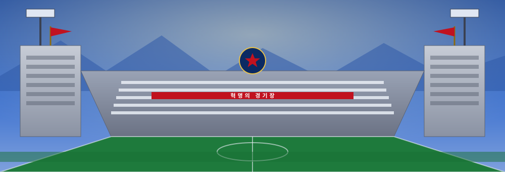

혁명의 경기장
ESTÁDIO DA REVOLUÇÃO · 로동혁명축구단의 성지
경기장 개요 The Stadium
| 명칭 | 혁명의 경기장 (Estádio da Revolução) |
|---|---|
| 수용 인원 | 115,000명 |
| 위치 | 혁명시 중앙 광장 인근 |
| 개장 | 주체58년 (1969년), 주체99년(2010년) 현대화 |
| 구조 | 철근콘크리트 사회주의 건축 양식 · 대규모 카드섹션 관중석 |
| 표면 | 천연 잔디 |
력사 · História
혁명의 경기장은 주체58년(1969년) 구단의 첫 전국 우승을 기념하여 건립되었다. 웅장한 브루딸리즘 양식의 관중석과 하늘 높이 솟은 조명탑, 그리고 거대한 붉은기가 어우러진 이 경기장은 도시의 상징이 되었다.
주체99년(2010년) 대대적인 현대화를 거치며 수용 인원이 확대되고 최신 설비가 도입되었다. 대규모 인간 카드섹션은 경기 때마다 장엄한 그림을 연출하며 원정 팀을 압도한다.
응원 · Torcida
붉은 물결의 응원단은 경기 내내 조직적인 구호와 카드섹션으로 선수들을 독려한다. "로동자의 힘!"이라는 함성이 경기장을 가득 메우는 순간, 상대 팀은 압도적인 분위기에 눌리곤 한다.
명승부 · Principais Partidas
- 주체62년전국선수권 결승 vs 강철제철3 : 2
- 주체101년국제혁명배 결승 (리동수 결승골)2 : 1
- 주체108년무패 우승 확정전 vs 백두산근위4 : 0